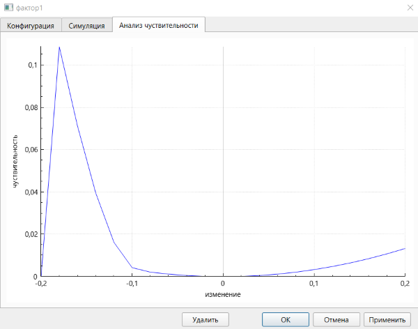

1. Анализ чувствительности НКК осуществляется на вкладке анализа чувствительности. Для перехода на эту вкладку с другой вкладки необходимо нажать на заголовок «Анализ чувствительности».
2. На данной вкладке могут быть изменены параметры прогнозирования НКК, а также заметки НКК. Поле заметок данной вкладки всегда имеет одно и то же содержимое с полем заметок на вкладке настройки модели. В дополнение, работа с интерактивной областью и её масштабом осуществляется аналогично вкладке симуляции.
3. В начальном состоянии на вкладке отображен граф НКК, аналогичный отображённому на вкладке построения НКК графическим методом.
4. Пользователь может задавать следующие параметры анализа чувствительности: максимальное изменение, которое может быть применено к отдельному элементу и типы элементов (фактора и (или) связи), которые могут быть изменены.
5. Для запуска анализа чувствительности необходимо нажать кнопку «Проанализировать». Анализ может занимать длительное время. В нижней части вкладки расположена шкала прогресса, в которой отображается степень выполнения анализа чувствительности в процентах.
6. Анализ чувствительности осуществляется одновременно для каждого элемента и НКК в целом:
6.1. Анализ чувствительности для каждого элемента:
6.1.1. Элементами могут выступать факторы и (или) связи в соответствии с выбором в пункте 4.
6.1.2. При анализе каждый элемент рассматривается отдельно.
6.1.3. В случае, если прогнозирование выполняется по численным значениям, они изменяются на значения, по модулю не превышающие максимальное изменение, (диапазон заполняется равномерно).
6.1.4. В случае, если прогнозирование выполняется по нечётким значениям, каждый из параметров треугольного нечёткого значения изменяется аналогично числовому значению в предыдущем пункте во всех возможных комбинациях. Итоговое изменение оценивается как среднее модулей изменений.
6.1.5. Результаты данного вида анализа представляются в виде:
6.1.5.1. Цветов элементов НКК, отражающих среднее значение метрики изменения по сравнению с эталонным результатом прогнозирования.
6.1.5.2. Графиков зависимости значения метрики изменения по сравнению с эталонным результатом прогнозирования от изменения элемента, который присутствует на вкладке результатов анализа чувствительности окна элемента, открывающегося при нажатии на элемент правой кнопкой мыши:

6.2. Анализ чувствительности для НКК в целом:
6.2.1. Изменяются элементы выбранные в соответствии с пунктом 4.
6.2.2. Рассматривается определённое количество порогов, от 0 (исключая) до порога, заданного в соответствии с пунктом 4.
6.2.3. Для каждого порога все элементы случайно изменяются на значение, по модулю меньшее порога. При этом для каждого порога выполняется большое число таких экспериментов.
6.2.4. Результат представляется в виде графика зависимости среднего значения метрики изменения по сравнению с эталонным результатом прогнозирования по экспериментам порога от порога. Для перехода к данному графику необходимо нажать кнопку «Чувствительность НКК». Для перехода обратно – ту же кнопку, но уже имеющую надпись «Чувствительность элементов НКК».
7. По завершении анализа может быть осуществлён сброс в исходное состояние (до начала анализа) при помощи кнопки «Сбросить». При этом в случае, если после начала анализа параметры НКК были изменены, после сброса эти изменения появятся на интерактивной области.